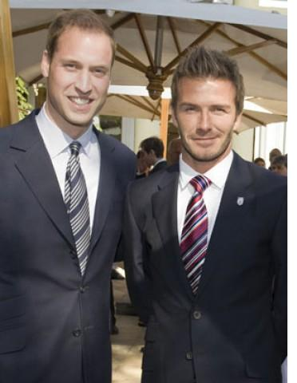
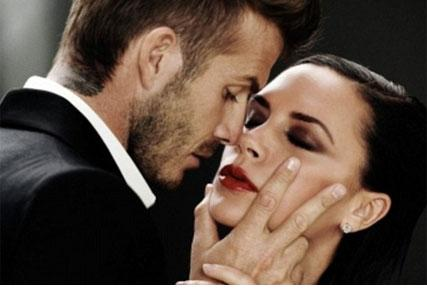

Chương Cuối

iều gì làm nên thành công của David Beckham?
Trước hết là sự khổ luyện. Tuy có năng khiếu, David không phải thần đồng hay thiên tài. Thiên tài như Maradona mới 16 tuổi đã lừng danh khắp nước, còn David khi 20 vẫn chưa thực sự nổi bật. Trong Thế Hệ Vàng Alex Ferguson, không kể Ryan Giggs đã nổi từ trước, thì Nicky Butt được coi là triển vọng nhất. Beckham ban đầu bị đánh giá thấp hơn, đến nỗi từng phải dạt sang Preston North End một thời gian.
Không sở hữu tài năng thiên phú, David trở thành cầu thủ giỏi, một phần lớn nhờ vào đức tính siêng năng chịu khó, kiên trì bền bỉ. Những cú sút phạt thần sầu, những đường tạt bóng tuyệt luân của anh chẳng phải tự nhiên mà ra, mà là thành quả của hàng chục năm mướt mồ hôi luyện tập, từ khi còn nhỏ xíu, chơi bóng trong công viên với cha, đến lúc gia nhập mái nhà United, được sự dẫn dắt của những người thầy đầy năng lực như Eric Harrison và Sir Alex Ferguson. Nhận xét về chàng thiếu niên David Beckham, Sir Alex đơn giản nhắc đi nhắc lại hai chữ “luyện tập, luyện tập, và luyện tập”. Nỗ lực trui rèn không ngừng nghỉ, đó là con đường dẫn đến ước mơ.
Cầu thủ giỏi thì không thiếu, David khác hơn nhiều người ở chỗ anh duy trì được lối sống lành mạnh. Hiển nhiên, David có ăn chơi, có tiêu xài xa xỉ, nhưng anh không nghiện ma túy như Maradona, không nghiện rượu như George Best, không vũ phu đánh vợ như Paul Gascoigne. Bên cạnh việc hưởng thụ, David giành nhiều thời gian, tiền của làm việc xã hội, từ thiện, giúp đỡ người nghèo, thiếu nhi bất hạnh. Có tài thường có tật, xã hội chấp nhận điều ấy, song có tài mà không tật lại càng đáng quý. Về khoản tứ đổ tường, trừ scandal tình ái không mấy rõ ràng ở TBN, David không mắc phải điều tiếng gì khác. Đàn ông không hút thuốc, không nhậu nhẹt, không bài bạc như anh, trong xã hội nói chung còn hiếm, nói chi trong thế giới những người nổi tiếng.
Nhiều nhân vật rất đình đám, nhưng chỉ có một đối tượng người hâm mộ nhất định. Lady Gaga là một ví dụ. Có người mẹ nào khuyến khích con cái học theo gương Lady Gaga? Hay có nhà mô phạm nào thần tượng cô ta? David Beckham thì thích hợp cho mọi tầng lớp, mọi lứa tuổi. Lady Gaga hay Paul Gascoigne giống như những cuốn phim được dán nhãn R hay X, chỉ có thể phổ biến trong phạm vi giới hạn, còn David như phim nhãn G hoặc PG, lành mạnh và sạch sẽ (tương đối thôi), phục vụ được cả quần chúng.
Bên cạnh tài năng – đức tính, David trở thành biểu tượng toàn cầu còn nhờ hai nhân tố quan trọng khác. Thứ nhất là sắc diện. Có ghét Beckham đến đâu, cũng không thể phủ nhận sự hấp dẫn của anh. Khuôn mặt David rất điển trai, khi trẻ thì dễ thương, trong sáng, lúc lớn tuổi hơn thì nam tính, lãng tử. Thân hình anh rắn chắc, mạnh mẽ, phong thái lịch lãm, hào hoa. Điểm yếu duy nhất ở David là giọng nói nghe hơi yếu, không được oai, có vẻ “quê mùa”. Chẳng lạ gì khi các bà các cô chết mê chết mệt Beckham. Ngay những cô lên tiếng tố cáo David phản bội Victoria để lăng nhăng với mình, cô nào cũng phải thừa nhận anh rất quân tử, ga lăng và lịch thiệp. Vậy thì dù David có thực sự lăng nhăng chăng nữa, anh cũng là một Trấn Nam Vương Đoàn Chính Thuần, chứ không phải một Sở Khanh nham nhở!
Nhân tố thứ hai chính là Victoria. Như nhận định ở một chương trên, nhờ Victoria mà David trở nên nổi tiếng bên ngoài phạm vi bóng đá. Trong cuốn Sir Alex Ferguson – Chân Dung Một Huyền Thoại, chúng tôi đã nhắc đến sự cộng hưởng phong độ giữa Andy Cole và Dwight Yorke, giữa David và Victoria cũng có sự cộng hưởng tương tự như vậy. David nổi tiếng, Victoria nổi tiếng, nhưng hai người cộng lại không chỉ nổi tiếng gấp đôi, mà là gấp ba, gấp bốn, gấp năm. Cả hai cùng giúp nhau thăng hoa, nâng nhau lên một tầm cao mới.

David Beckham và hoàng tôn[1] William (Ảnh: Nowmagazine)
Tài năng, sắc diện, và hôn thê nổi tiếng, ba nhân tố kết hợp đã đẩy David lên địa vị một “siêu tân tinh”. Nhiều cầu thủ cũng rất nổi danh, song không nổi được như Beckham, chính là vì thiếu ít nhất một trong ba. George Best và David Ginola vừa giỏi vừa đẹp trai, nào có kém ai, nhưng không có cô vợ ngôi sao. Ngược lại, Gerard Pique có ý trung nhân là ca sỹ lừng danh Shakira, nhưng không đẹp trai, gợi tình, mà nhìn ngô ngố. Hơn thế nữa, Pique không có những cú sút phạt cầu vồng, những đường tạt bóng lả lướt. Chơi vị trí trung vệ, anh khó nổi bật bằng các cầu thủ đá trên tuyến hai hay tuyến ba.
Trong giới showbiz, David và Victoria được chú ý nhiều, bởi họ là “hàng độc, hàng hiếm”. Minh tinh làng giải trí lấy lẫn nhau vẫn là chuyện thường, có điều chẳng cuộc hôn nhân nào kéo dài được lâu. Từ những cặp ngày xưa như Laurence Olivier – Vivien Leigh, Richard Burton – Elizabeth Taylor, đến ngày nay như Nick Lachey – Jessica Simpson, Tom Cruise – Nicole Kidman, có cặp nào lâu bền đâu. Brad Pitt và Angelina Jolie cho tới giờ vẫn còn bên nhau, nhưng họ chỉ là “rổ rá cạp lại”. Jolie từng có hai đời chồng, trước khi “giựt” Pitt từ tay Jennifer Aniston! Chỉ có vợ chồng David Beckham luôn luôn nồng thắm.
Scandal tình ái của David ở TBN đến giờ vẫn được nhiều người nhắc đến. Rebecca Loos cũng nhờ đó mà trở nên một dạng ngôi sao. Tuy thế, phải nhắc lại lần nữa rằng việc David lăng nhăng bên ngoài, không ai đủ bằng cứ để khẳng định. Dù điều đấy là thật, điều quan trọng là anh và Victoria vẫn gắn bó bên nhau. Sóng gió và thử thách luôn tồn tại trong những cuộc hôn nhân, vượt qua chúng để giữ vẹn câu thề ngày hôn phối, không phải ai cũng làm được.
Chẳng phải ngẫu nhiên David được hâm mộ cách đặc biệt tại Đông Á. Nên nhớ, người Đông Á chúng ta rất đề cao giá trị gia đình, trong khi người Tây phương thiên nhiều về cá nhân chủ nghĩa. David sinh ở phương Tây, mà quan niệm của anh gần gũi với phương Đông. Giữa lúc nhiều ngôi sao khác lo hưởng lạc cho riêng mình, không muốn sinh con, hoặc chỉ sinh tối thiểu một đứa, David và Victoria thích thú muốn có một đại gia đình, cứ sòn sòn vài năm lại cho ra một bé. David yêu vợ, yêu con hết mực. Vì vợ con, anh sẵn sàng đối mặt với người thầy yêu kính Alex Ferguson. Tình cảm gia đình của David vô cùng sâu đậm, và anh không bao giờ ngần ngại thể hiện điều đó. Ngày hôn lễ: anh khóc, nghe tin vợ mang thai: anh khóc, hôm vợ sinh: anh khóc, bữa đầu tiên đưa con đi học: anh cũng khóc.
Có người nói: Như thế là ủy mị, không nam tính. Không phải, tính hay khóc chỉ nói lên một điều: David rất giàu tình cảm. Nam tính David thể hiện ở chỗ khác, chẳng hạn như ở tinh thần vượt khó trong sự nghiệp. Sau World Cup 1998, bị cả một đất nước vùi dập tơi bời, người khác có thể đã bỏ cuộc, hoặc khá hơn cũng bán xới, bỏ chạy khỏi Anh Quốc, David vẫn cắn răng trụ vững, để rồi rũ bùn đứng dậy, cùng Manchester United làm nên chiến tích ăn ba kỳ vĩ, sau đó trở thành “người hùng dân tộc” ở Nhật – Hàn. Tinh thần ấy làm không ít hooligan từng mạ lỵ David đủ điều phải khâm phục, chuyển sang hâm mộ anh. Tương tự, năm 2007, bị Capello loại khỏi đội hình Real Madrid, và McClaren loại khỏi tuyển Anh, David không mất tinh thần. Anh tăng cường nỗ lực, dùng phong độ trên sân thay cho lời nói, khiến cả hai HLV phải nhận ra mình đã sai. David chẳng phải thần thánh để không vấp ngã, song mỗi lần ngã, anh lại đứng lên, mạnh mẽ bội phần.
Dĩ nhiên, góp phần làm nên thành công của Beckham còn có những nguyên nhân khách quan. Nếu như David và Victoria sinh ở Việt Nam, họ chỉ trở thành…Công Vinh và Thủy Tiên. Nếu như David suốt đời chơi bóng cho Southampton, anh không thể nổi tiếng hơn Matthew Le Tissier. Nhờ khởi nghiệp ở Manchester United, đúng vào lúc giải ngoại hạng Anh phủ sóng toàn cầu, David mới dễ dàng gây dựng nên danh tiếng. United là CLB được hâm mộ nhất hành tinh, với lượng fan hâm mộ hiện nay ước tính lên đến gần 700 triệu người, giải ngoại hạng có lượng khán giả lên đến gần 5 tỷ. Không có bệ phóng ấy thì không có David Beckham.
Khi rời United, David chuyển đến Real Madrid, một CLB cũng cực lớn, sở hữu cả một “dải ngân hà” lấp lánh những vì sao. Trên thế giới có ba cộng đồng ngôn ngữ lớn nhất: tiếng Hoa, tiếng Anh, và tiếng TBN. David đã chinh phục 2 cộng đồng tiếng Hoa và Anh, 4 năm ở Madrid, anh chinh phục nốt cộng đồng tiếng TBN. Lúc David sang Mỹ, danh tiếng của anh đã quá vững, nếu không lên cũng không thể xuống. Pele dù giải nghệ vẫn là vua bóng đá. Beckham cũng vậy, dù đá ở “vùng trũng” như Mỹ, vẫn không sợ giảm sút tiếng tăm…
Chia tay sân cỏ, với số tài sản tích lũy bấy lâu, Beckham có thể ngồi không, không làm gì cả, song như thế thì chán lắm. Liệu anh sẽ làm gì sắp tới, trong sự nghiệp “hậu cầu thủ”? Milligan (2010) đưa ra vài “gợi ý” như sau:
-Lập công ty chuyên sản xuất vật dụng thể thao mang thương hiệu David Beckham, và niêm yết công ty trên thị trường chứng khoán.
-Theo gót Victoria, trở thành nhà thiết kế thời trang và trang trí nội thất.
-Đóng phim Hollywood chung với bạn thân Tom Cruise.
-Chuyển sang sinh sống ở Đông Á, làm nhà tạo mốt, sáng tạo trào lưu, dẫn dắt lối sống cho thanh thiếu niên.
-Về Anh làm HLV, dẫn dắt Manchester United và Tam Sư.
-Đi khắp nơi trên thế giới trong vai trò đại sứ thiện chí, làm từ thiện, giúp đỡ những người cùng khổ.
Riêng chúng tôi lại thấy Beckham nhiều khả năng sẽ mua một CLB ở MLS, rồi thử khả năng làm ông bầu. Ngay từ hồi còn thi đấu cho Galaxy, anh đã nhiều lần nhắc đến ý định này.
Còn các bạn nghĩ sao?

(Ảnh: Prweek)
Chú thích:
[1] Con vua gọi là hoàng tử, cháu vua gọi hoàng tôn. William là cháu nội nữ hoàng Elizabeth II, anh là hoàng tôn, không phải hoàng tử như báo chí Việt Nam vẫn gọi một cách bậy bạ.